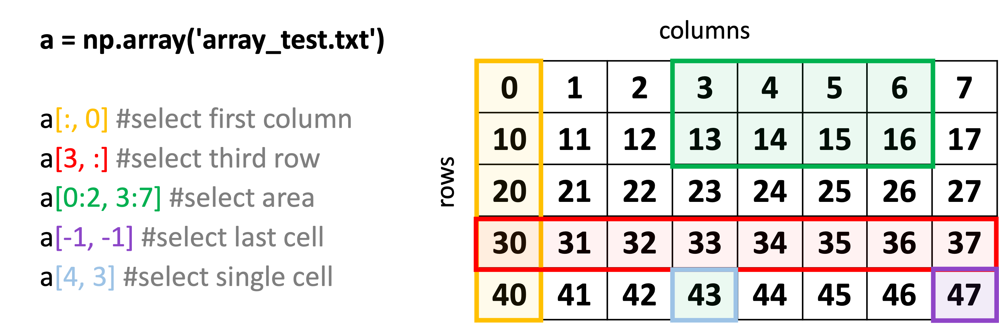

Loading and Manipulating Structured Data
Contents
Loading and Manipulating Structured Data#
Extra material for Unit 05#
Authors:
Dr Valentina Erastova
Hannah Pollak
When should I use numPy and when Pandas ?#
In Python, there are multiple ways to load and work with datafiles.
One possible option is to use np.loadtxt function to read textfile data into a numpy array. Following the link we can check how loadtxt expects a file to be formatted. The comment lines should starts with # and the values within one row are expected to be separated by a “whitespace” (=one or multiple space or tab characters). For example a file like this:
# AUTHORS: Schmidt J, Institute of Plant Biochemistry, Halle, Germany
# m/z int. rel.int.
27.000 64.627 5
30.000 121.469 11
32.000 45.386 3
41.000 16.304 0
42.000 3731.328 372
44.000 29.229 1
will be read in correct. BUT, if the formatting of the file differs from the expected structure, i.e. if in the filename.txt values are separated by , instead of a whitespace, or if lines were commented with ; instead of #, the file would only be read correctly if the delimeters and comments are stated:
np.loadtxt('filename.txt', delimiter=',', comments=';')
Another way is to store a textfile data in a pandas DataFrame. In this case, we have to use pandas.load_csv. Following the link to their documentation we can see that the function expects the row values to be separated by , and by default it will not expect any commented lines.
Viewing the datafile in the Jupyter Notebook#
Before loading the data into the notebook it is good to take a closer look at its structure.
To do this we can use head. Since this command is not a python command we have to add a ! before it. To only see first 24 lines, add -24 before filename filename.txt.
!head -24 filename.txt
Another command you may come across is cat - use it in the similar way.
!cat -24 filename.txt
Let’s try to load an example file array_test.txt with pandas and assign it into a dataframe.
First, check how the file looks like with !head then load the file (do you need to import pandas?)
filename = 'DATA/array_test.txt'
example_df = pd.read_csv(filename)
example_df.head(5)
#!head 'array_test.txt'
!cat 'DATA/array_test.txt'
# a comment line
0 1 2 3 4 5 6 7
10 11 12 13 14 15 16 17
# more comments
20 21 22 23 24 25 26 27
30 31 32 33 34 35 36 37
40 41 42 43 44 45 46 47
import numpy as np
import pandas as pd
As we can see, read_csv was not able to correctly read the file. Therefore, we have to provide read_csv with the correct delimiter and comment information. If comments are only at the beginning of the file, alternatively, they could also be skipped with skiprows. Compared to loadtxt, read_csv is much more flexible when it comes to reading files which are formatted in a non-standard way. By default, read_csv uses the first row for column lables. If this is not desired you have to specify header=None.
example_df = pd.read_csv(filename, comment='#', delimiter='\s+', header=None)
# change the way you read the header
Compared to loadtxt, read_csv is much more flexible when it comes to reading files which are formatted in a non-standard way. Additionally, DataFrames give the possibility to assign column labels and an index which can make data accession more intuitive. This makes them especially useful for large datasets. If no information is given, the first row will be used as column names and the index will be just the row numbers.
Let’s assign column names and an index:
example_df.columns=['c0', 'c1', 'c2', 'c3', 'c4', 'c5', 'c6', 'c7']
example_df.index=['a', 'b', 'c', 'd', 'e']
# assign columns and index
filename = 'DATA/array_test.txt'
example_df = pd.read_csv(filename)
example_df.head(5)
| # a comment line | |
|---|---|
| 0 | 0 1 2 3 4 5 6 7 |
| 1 | 10 11 12 13 14 15 16 17 |
| 2 | # more comments |
| 3 | 20 21 22 23 24 25 26 27 |
| 4 | 30 31 32 33 34 35 36 37 |
Can you read the other file array_test2.txtin the same way asarray_test.txt? Or do you need to provide the correct delimiter and comment information? What about the header?
Check the file and decide.
# read in another file
example2_df.index=['a', 'b', 'c', 'd', 'e']
example2_df
| A | B | C | D | E | F | G | H | |
|---|---|---|---|---|---|---|---|---|
| a | 0 | 1 | 2 | 3 | 4 | 5 | 6 | 7 |
| b | 10 | 11 | 12 | 13 | 14 | 15 | 16 | 17 |
| c | 20 | 21 | 22 | 23 | 24 | 25 | 26 | 27 |
| d | 30 | 31 | 32 | 33 | 34 | 35 | 36 | 37 |
| e | 40 | 41 | 42 | 43 | 44 | 45 | 46 | 47 |
EXAMPLE SOLUTION:
Read in ‘array_test.txt’ file:
import pandas as pd
filename = 'DATA/array_test.txt'
example_df = pd.read_csv(filename)
example_df.head(5)
Change the way you read the header:
example_df = pd.read_csv(filename, comment='#', delimiter='\s+', header=None)
example_df
Assign columns and index:
example_df.columns=['c0', 'c1', 'c2', 'c3', 'c4', 'c5', 'c6', 'c7']
example_df.index=['a', 'b', 'c', 'd', 'e']
example_df
Read in ‘array_test2.txt’ file:
filename2 = 'DATA/array_test2.txt'
example2_df=pd.read_csv(filename2, comment=';',delimiter=',')
example2_df
Note that this file has a header, so you do not need to assign the columns. It is still usefule to assign the index:
example2_df.index=['a', 'b', 'c', 'd', 'e']
example2_df
Accessing the Data in an Array#
In numpy, different entries of an array can be accessed by specifying their row and column numbers.
In pandas, with loc and iloc, entries can be selected either by index and column label, or by the column and index numbers.
Remember: When selecting data using row and column numbers, counting always starts from 0!
Numpy VS Pandas cheat sheet #
{kind=link}